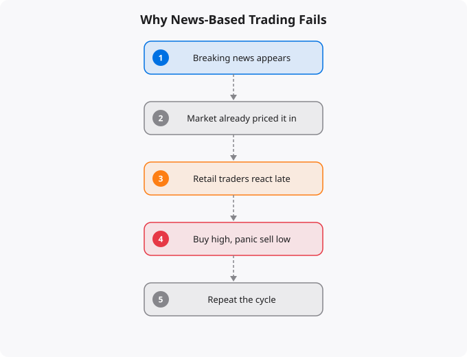

You read that a company has just reported better-than-expected earnings. You think the stock will go up. You buy. The stock goes down. You are confused — the news was good, how could the stock fall? Or you hear that the RBI is raising interest rates. You think this is bad for the market. You sell. The market goes up 2% that day. These experiences are extremely common among retail investors. They expose a fundamental misunderstanding about how financial markets work — a misunderstanding that costs many people significant money before they either figure it out or give up on investing entirely.
Financial markets are among the most competitive information-processing systems ever created. Thousands of professional analysts, hundreds of institutional trading firms, and millions of market participants are all simultaneously trying to predict future prices based on available information. When news is released — earnings reports, economic data, central bank decisions, geopolitical events — it is not just you who sees it. Every professional trader in the world sees it at the same time. The implication is that by the time you read news on a website, watch a financial channel, or see a notification on your phone, the price has already adjusted. Markets process publicly available information extremely quickly. High-frequency trading firms execute orders in microseconds. The retail investor reading news at home is operating with a structural time disadvantage of minutes to hours — and in information terms, that is an eternity.
You will often hear financial analysts say that something is priced in. This means that the market's expectation of a particular event is already reflected in the current price. Before a company reports earnings, analysts publish their estimates. These estimates become the market's consensus expectation. If a company reports earnings that meet or slightly beat those estimates, the market has already priced in that performance. The stock might barely move — or might even fall if the beat was less impressive than hoped. What moves a stock on earnings day is the gap between actual results and expectations. A company can report excellent absolute earnings and have its stock fall if those earnings were below what analysts expected. This is why the response to news is often counter-intuitive to new investors.
Even if you somehow had access to news before the market processed it — which would be illegal insider trading — converting news into accurate price predictions would still be extremely difficult. Markets are complex adaptive systems made of human beings making decisions based on their interpretation of information, their risk tolerance, their liquidity needs, and countless other factors. The same piece of news can be interpreted in multiple ways. Rising inflation might be bad for certain sectors but good for others. Even professional macro traders and economists, who spend all day studying economic data and market dynamics, have a poor track record at short-term directional predictions. The Federal Reserve's own economists have repeatedly failed to predict recessions.
News-based trading amplifies emotional decision-making. News is specifically designed to capture attention and evoke emotional responses. Financial media tends to amplify drama — every market move is described in urgent language, every economic development is portrayed as historic or alarming. This emotional amplification is precisely the opposite of what good investing requires. The best investing decisions are made calmly, with a long time horizon, based on fundamental analysis rather than the latest headline. When you make trading decisions based on news, you are making them in a heightened emotional state, under time pressure, based on information that has already been processed by faster participants.
Long-term, fundamentals-based investing has the best track record for retail investors. Rather than trying to predict short-term price movements from news, focus on understanding the businesses you own, the sectors you invest in, and the long-term economic trends that drive wealth creation. If you invest in equity index funds or diversified mutual funds, you can largely ignore day-to-day news entirely. The long-term trend of well-diversified equity markets has historically been upward, driven by real economic growth, productivity improvements, and corporate earnings growth.
If you invest in individual stocks, focus on business quality, competitive position, management track record, and valuation relative to earnings and growth prospects. Read earnings reports and annual reports carefully — not to trade on them, but to verify that your investment thesis remains intact. Long-term structural trends are worth understanding because they affect the underlying businesses you invest in over years or decades. But these are best absorbed slowly, through thoughtful reading and analysis, not through real-time news consumption and rapid trading. Stop watching financial news for trading signals. Start building understanding for long-term perspective.
Financial education is only valuable if it changes behavior. The concepts covered here — whether about market mechanics, investment principles, or economic systems — are most useful when they become part of your decision-making framework rather than abstract knowledge that exists separately from your actions. The most important application is self-awareness: understanding why you are tempted to make certain financial decisions, recognizing when emotion is driving a choice that analysis should drive, and building systems (automatic investments, pre-committed rules for buying and selling) that protect you from your own worst instincts under pressure. Good financial decisions compound just as good investments do.
Every topic in technology and finance rewards the learner who goes beyond surface understanding to build genuine fluency. Fluency comes from repeated exposure, application in varied contexts, and reflection on what worked and what did not. The concepts discussed here are starting points — each one opens into a deeper field of study that could occupy years of focused learning. The most effective approach is not to try to master everything at once, but to pick the areas most relevant to your current goals, go deep there, and then expand. Depth in a few areas is more valuable than shallow familiarity with many. Build on what you know, stay curious about what you do not, and keep the practice of learning as a consistent daily habit rather than an occasional burst of effort.
The questions that make learning stick: How does this connect to what I already know? Where would I actually use this? What would happen if I tried to explain this to someone who knows nothing about it? What are the edge cases and exceptions? What is still unclear? Asking these questions transforms passive reading into active learning, and active learning is what builds the kind of understanding that is still accessible years later when you need it under real conditions.
Reading about markets is not investing. Understanding market theory is not making money. The gap between knowledge and results in investing is filled by the practice of forming independent views, testing them against reality, and updating your thinking when evidence contradicts your expectations.
Developing a genuine market view requires: choosing 2-3 indicators to follow consistently rather than tracking dozens superficially, reading primary sources (earnings reports, central bank statements, economic data releases) rather than just media commentary, maintaining an investment journal where you record your reasoning when making decisions, and reviewing that reasoning 6-12 months later to understand where your thinking was right or wrong.
Weekly routine (30 minutes):
Monday: Review portfolio performance vs benchmark
Tuesday: Read one company annual report (if stock investor)
Wednesday: Check economic calendar for key data releases
Thursday: Review Fed/RBI communications from that week
Friday: Journal -- what happened this week vs expectations?
Monthly routine (2 hours):
Review asset allocation vs targets
Rebalance if any asset class drifted more than 5%
Read one investment book chapter or whitepaper
Review all open positions and thesis validity
Quarterly routine (4 hours):
Portfolio review: what worked, what did not, why?
Tax optimization check
Update financial goals
Read one earnings season summary for key companiesMarkets in liquid, public securities are highly efficient at incorporating publicly available information. Reading the same Bloomberg article, watching the same CNBC segment, and following the same analysts as millions of other investors does not give you an informational edge. By the time you read it, the market has likely already priced it in.
Where individual investors can have a genuine edge: patience (most institutional investors face quarterly performance pressure that prevents holding through temporary weakness), sector expertise (knowing an industry deeply as a practitioner gives real insight), tax efficiency (individual investors can optimise for after-tax returns in ways institutions cannot), and behavior (simply not panic selling during drawdowns outperforms most active strategies).
Beginners think about investing as picking the stocks that will go up the most. Experienced investors think about risk management first -- ensuring that mistakes do not destroy the portfolio's ability to recover and compound. The most important risk management principles: never invest money you will need within 5 years, diversify across asset classes and geographies, avoid leverage (borrowed money amplifies both gains and losses), and size positions so that being completely wrong on any single investment does not materially damage the portfolio.
Standard financial planning guidance: build a 3-6 month emergency fund first. Then invest 10-20% of gross income, increasing toward 20%+ as income grows. For aggressive wealth building, aim for a 30-40% savings rate. Invest consistently regardless of market conditions -- time in the market beats timing the market.
Investing is deploying capital for long periods (years to decades) based on fundamental value creation. Trading is buying and selling over shorter timeframes based on price movements. Most retail investors who attempt trading underperform a simple index fund. Investing in low-cost index funds consistently outperforms most active strategies over 10+ year periods.
Start with NIFTY 50 or NIFTY 500 index funds via SIP (Systematic Investment Plan) through any major AMC or broker. Index funds provide diversification, low costs, and performance that matches the market. Add direct equity only after you have at least 6-12 months of investing experience and genuine time to research individual companies.
Yes. India is one of the fastest-growing tech markets globally. These skills are in high demand across startups, MNCs, and product companies in Bangalore, Hyderabad, Pune, and Mumbai.
Follow official documentation, tech blogs from practitioners, GitHub repositories, and communities like Dev.to, Hashnode, and Reddit. Avoid news that creates urgency without substance.
Official documentation first. Then practical tutorials. Then build real projects. SRJahir Tech articles are written from real production experience — bookmark the series that matches your learning goal.
Consistent daily practice for 3-6 months produces real, usable skills. The key is building projects, not just reading. Every article on SRJahir Tech includes practical examples you can implement today.
Yes. All articles on SRJahir Tech are completely free. No paywalls, no subscriptions. Quality technical education should be accessible to everyone, especially aspiring engineers in India.